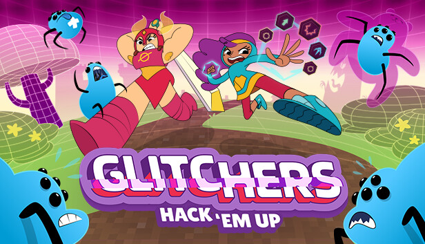

Glitchers: Hack 'Em Up
PushStart StudioTechnologies: Construct 3, JavaScript
Platform: Windows
Partially funded by SPCine grants

Glitchers: Hack 'Em Up is a casual fantasy beat 'em up featuring puzzle mechanics. Players take control of Trix, accompanied by her companion Ada, as they hack and slash their way through enemies.
The project was developed in under three months as a vertical slice for a grant proposal submitted to SPCine.
Contributions & Responsibilities
As one of three developers on the programming team, I was responsible for implementing several of the game's core systems, including the State Machine System, Combat System, and Hack Mode. I also contributed to supporting features such as title, loading, and credits screens, as well as sound implementation.
eyond programming, I collaborated with the art and animation teams to coordinate asset integration, address technical constraints, and align development priorities and deliverables.
State Machine System: designed and implemented a state machine system from scratch to manage the behavior and states of game actors. This involved working around the technical limitations of a closed-source engine that could not be modified to accommodate project requirements.
Combat System: implemented core combat mechanics, including player actions, skills, character states, animations, and gameplay events, establishing the foundation for further combat development and integration. Also developed Hack Mode, featuring its own gameplay mechanics.
Cross-Team Work: worked closely with the art and animation teams to translate creative concepts into technically feasible combat assets and animations, adapting implementations to the engine's limitations. Also helped coordinate deadlines and deliverables across teams.